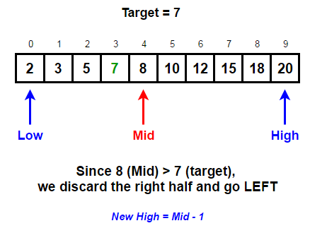
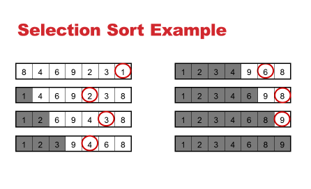
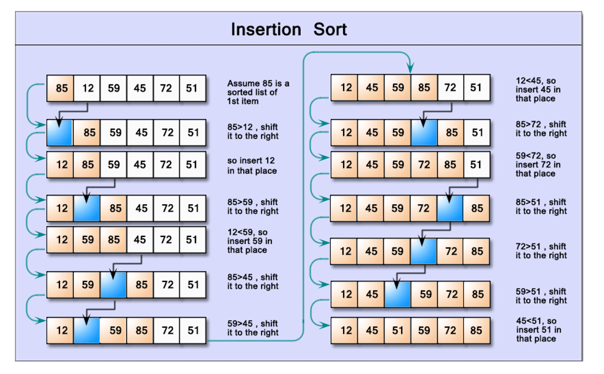

Searching
Searching algorithms are used to find a specific value within an array. Looping through the entire array to find a single value is possible, however slow and inefficient.
Binary Search
Binary search is a recursve algorithm that calls itself until the element is found. Binary search requires the array to be sorted before hand. You take the middle element and you compare whether it is smaller or larger than the value you would like. If the middle element is too small, then you take the top half of the array and start from the middle again, and if the middle value is too low then vice versa.

int binarySearch(int arr[], int l, int r, int x) {
if (r >= l) {
int mid = l + (r - l) / 2;
// If the element is present at the
// middle itself
if (arr[mid] == x)
return mid;
// If element is smaller than mid, then
// it can only be present in left subarray
if (arr[mid] > x)
return binarySearch(arr, l, mid - 1, x);
// Else the element can only be present
// in right subarray
return binarySearch(arr, mid + 1, r, x);
}
}
}
Sorting
Sorting algorithms sort the values of an array in either ascending or descending order
Selection Sort
This is a search and swap algorithm. First find the smallest element in the whole array and swap it with the value at index 0. Now the smallest element is the first value. Next repeat this step however with the array shrunken to from index 1 to the end then index 2 etc... until the array shrinks to one element.

int n = arr.length;
// One by one move boundary of unsorted subarray
for (int i = 0; i < n-1; i++) {
// Find the minimum element in unsorted array
int min_idx = i;
for (int j = i+1; j < n; j++){
if (arr[j] < arr[min_idx])
min_idx = j;
}
// Swap the found minimum element with the first
// element
int temp = arr[min_idx];
arr[min_idx] = arr[i];
arr[i] = temp;
}
Insertion Sort
For insertion sort, think of an array having two subarrays, the first half that is sorted and the second half that is waiting to be sorted. At the beginning of the algorithm, the first element is the sorted array and everything else is the unsorted array. The first step is to take the 1st element of the unsorted array and compare it to the sorted array to determine its position, for the second step take the 2nd element etc...

int n = arr.length;
for (int i = 1; i < n; ++i) {
int key = arr[i];
int j = i - 1;
/* Move elements of arr[0..i-1], that are greater than key, to one position ahead of their current position */
while (j >= 0 && arr[j] > key) {
arr[j + 1] = arr[j];
j = j - 1;
}
arr[j + 1] = key;
}
Merge Sort
Merge sort is also a recursvie algorithm like binary search
Steps
- Break the array into two halves
- Mergesort the left half
- Mergesort the right half
- Merge the two subarrays into a sorted array

merge(int arr[], int l, int m, int r) {
// Find sizes of two subarrays to be merged
int n1 = m - l + 1;
int n2 = r - m;
/* Create temp arrays */
int L[] = new int[n1];
int R[] = new int[n2];
/*Copy data to temp arrays*/
for (int i = 0; i < n1; ++i)
L[i] = arr[l + i];
for (int j = 0; j < n2; ++j)
R[j] = arr[m + 1 + j];
/* Merge the temp arrays */
// Initial indexes of first and second subarrays
int i = 0, j = 0;
// Initial index of merged subarry array
int k = l;
while (i < n1 && j < n2) {
if (L[i] <= R[j]) {
arr[k] = L[i];
i++;
}
else {
arr[k] = R[j];
j++;
}
k++;
}
/* Copy remaining elements of L[] if any */
while (i < n1) {
arr[k] = L[i];
i++;
k++;
}
/* Copy remaining elements of R[] if any */
while (j < n2) {
arr[k] = R[j];
j++;
k++;
}
Quicksort
Quicksort is also recursive however it is the opposite of merge sort
Steps
- Choose a pivot point
- If value on right is smaller than pivot point move to left and vice versa
- Quicksort the right side of pivot point
- Quicksort the left side of the pivot point
//Pseudocode
Def QuickSort(array, low, high)
If low >= high:
return
Pivot = array[high]
leftPointer = low
For rightPointer in range(low to high)
If array[rightPointer] < pivot
Swap array[leftPointer] and array[rightPointer]
Leftpointer ++
Swap array[high] and array[leftPointer]
QuickSort(array, low, leftPointer-1)
QuickSort(array, leftPointer+1, high)